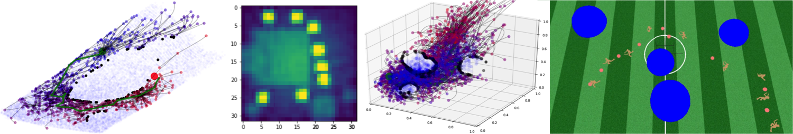
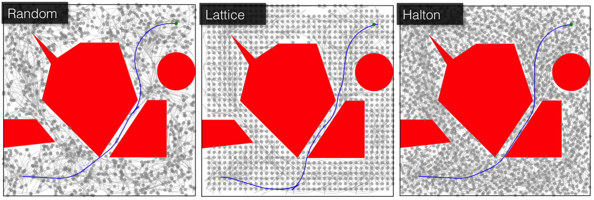
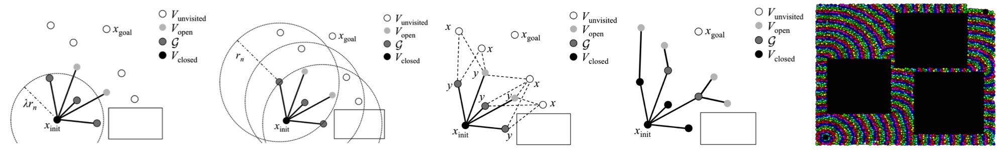
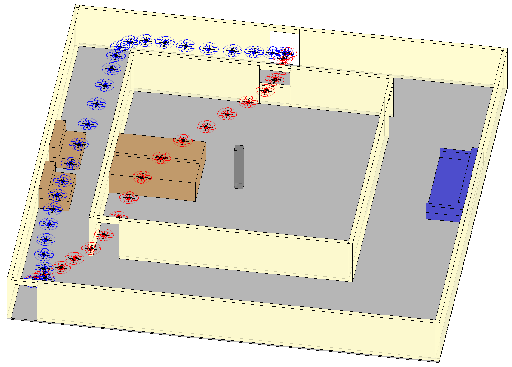
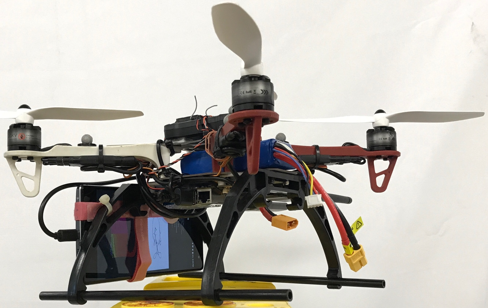

Planning in Learned Latent Spaces
My most recent work presented Latent Sampling-based Motion Planning (L-SBMP), a methodology towards computing motion plans for complex robotic systems by learning a plannable latent representation. Recent works in control of robotic systems have effectively leveraged local, low-dimensional embeddings of high-dimensional dynamics. Combining these recent advances with techniques from sampling-based motion planning (SBMP), we designed a methodology capable of planning for high-dimensional robotic systems beyond the reach of traditional approaches (e.g., humanoids, or even systems where planning occurs in the visual space). Specifically, the method constructs a learned latent space through an autoencoding network, a dynamics network, and a collision checking network, which mirror the three main algorithmic primitives of SBMP, namely state sampling, local steering, and collision checking. Notably, these networks can be trained through only raw data of the system's states and actions along with a supervising collision checker. Building upon these networks, an RRT-based algorithm can be used to plan motions directly in the latent space. This algorithm globally explores the latent space and is capable of generalizing to new environments.

Ichter, Pavone, "Robot Motion Planning in Learned Latent Spaces,” IEEE Robotics and Automation Letters and IEEE Conf. on Robotics and Automation, 2019 (submitted) (also to appear at Infer to Control: Workshop on Probabilistic Reinforcement Learning and Structured Control at NIPS 2018.).
Learned Sampling-based Motion Planning Github Repo Github
Sampling Strategies for Motion Planning
Learning Sampling Distributions

Sampling strategies for motion planning consist of the sampling source (random or deterministic; addressed in the above papers) and the sampling distribution (how the samples from the source are mapped into the state space). In practice, the impact of the sampling distribution often far outweighs the sampling source. Traditionally, the sampling distribution is uniform over the entire state space. In reality, the motion of many robotic systems is restricted to “small” regions of the state space. We proposed the use of techniques from deep learning to learn sampling distributions through demonstration. The sampling distribution is computed through a conditional variational autoencoder, allowing sample generation from the latent space conditioned on the specific planning problem. This approach has shown an order of magnitude improvement in terms of success rate and convergence to the optimal cost, while maintaining the theoretical guarantees of sampling-based approaches.
Ichter*, Harrison*, Pavone, "Learning Sampling Distributions for Robot Motion Planning,” IEEE International Conference on Robotics and Automation, 2018.
Learned Sampling Distributions Github Repo Github
Low-Dispersion, Deterministic Sampling
Traditionally, sampling-based motion planning algorithms have used i.i.d. random sampling to probe the configuration space. While this strategy is simple to implement and robust to obstacle/sample alignment issues, in many cases it is far from the best sampling choice. Instead, I have investigated low-dispersion sampling techniques, both deterministic and random, to show how algorithmic performance can be improved and what new and improved theoretical guarantees can be made (e.g., lower algorithmic complexity and guaranteed convergence rates).

Janson, Ichter, Pavone, "Deterministic Sampling-Based Motion Planning: Optimality, Complexity, and Performance,” International Journal of Robotics Research, 2017.
Janson, Ichter, Pavone, "Deterministic Sampling-Based Motion Planning: Optimality, Complexity, and Performance,” International Symposium on Robotics Research, 2015.
Deterministic Sampling Github Repo Github
Parallel Motion Planning
Group Marching Trees
To enable real-time motion planning, I am investigating algorithms for massive parallelization of sampling-based techniques. In particular, we proposed the Group Marching Tree (GMT*) algorithm. GMT* uses "lazy", approximate dynamic programming to explore the state space and grow a tree of near-optimal motion plans (optimal within a proven bound). It does this through expanding, in parallel, the group of all active samples with cost below an increasing threshold, rather than only the minimum cost sample. This group approximation enables low-level parallelism over the sample set and removes the need for sequential data structures, while the “lazy” collision checking limits thread divergence— all contributing to a very efficient GPU implementation. The resulting algorithm can solve planning problems (include those with differential constraints) on the order of 10ms, even on an embedded GPU, and generally one to two orders of magnitude faster than its CPU counterpart.

Ichter, Schmerling, Pavone, “Group marching tree: sampling-based approximately optimal motion planning on GPUs,” IEEE International Conference on Robotic Computing, 2017.
GMT* Github Repo Github
Parallel Kinodynamic, Uncertainty-Aware and Perception-aware Motion Planning

In order for robotic systems to begin operation in the field, they must not only plan quickly, but in a manner robust to uncertainty. I am thus working on parallel algorithms for dynamic, robust, real time motion planning. In particular, I am investigating sampling-based approaches to kinodynamic, uncertainty- and perception-aware motion planning. In these problems we seek low-cost motion plans, subject to a constraint on robustness. For uncertainty-aware planning this robustness constraint takes the form of a collision probability constraint and for perception-aware planning it is a localization-error constraint. The proposed algorithms then search the state space using a multiobjective search, considering both cost and an approximation to robustness (an approximate collision probability and a learned perception heuristic, respective to each problem), to identify many candidate motion plans. These candidate motion plans can then be certified "robust" through Monte Carlo methods. The additional computational burden of uncertainty- and perception-aware planning is offset by GPU massive parallelization using similar techniques to GMT*, resulting in algorithm runtimes order 100ms. The perception-aware planning work was verified on a quadrotor platform localized via a Google Tango smartphone, as can be seen in this video.

Ichter, Schmerling, Pavone, "Real-time stochastic kinodynamic motion planning via multiobjective search on GPUs,” IEEE International Conference on Robotics and Automation, 2017.
Ichter, Landry, Schmerling, Pavone, “Perception-Aware Motion Planning via Multiobjective Search on GPUs,” International Symposium on Robotics Research, 2017.
Parallel Uncertainty-aware Multiobjective Planning Github Repo Github